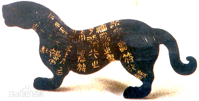
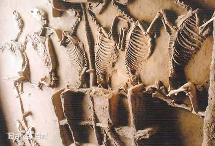

东周（公元前770年－公元前256年）
东周（公元前770年－公元前256年），中国历史上的朝代。西周覆灭后，诸侯拥立原先被废的太子宜臼为王，史称周平王， [1] 东迁洛邑（今河南洛阳），史称东周。
东周的前半期，诸侯争相称霸，称为春秋时代；公元前453年，韩赵魏三家联手灭智氏家族后，三家分晋，各诸侯相互征伐， [2] 称为战国时代。 [3-4]
周平王东迁以后，管辖范围大减，形同一个小国，春秋时共有140多诸侯国。面对诸侯之间互相攻伐和兼并，天子不能担负共主的责任，经常要向一些强大的诸侯求助。在这情况下，强大的诸侯便自居霸主，中原诸侯对四夷侵扰打着“尊王攘夷“的口号团结自卫。
周赧王八年（前307年），秦国借道东周攻打韩国，周人两边都不敢得罪，左右为难 [8] 。东周王城位于诸强国之间，不能同心协力，反而彼此攻杀 [9] 。至周赧王五十九年（前256年），西周国被秦国所灭，同年周赧王病死。七年后，东周国亦被秦所灭 [10] ，东周灭亡。 东周共传25王，历时515年， [11] 这一时期是中国的社会制度剧烈转变的时期，以铁器的广泛使用为标志。
东周的前半期，诸侯争相称霸，称为春秋时代；公元前453年，韩赵魏三家联手灭智氏家族后，三家分晋，各诸侯相互征伐， [2] 称为战国时代。 [3-4]
周平王东迁以后，管辖范围大减，形同一个小国，春秋时共有140多诸侯国。面对诸侯之间互相攻伐和兼并，天子不能担负共主的责任，经常要向一些强大的诸侯求助。在这情况下，强大的诸侯便自居霸主，中原诸侯对四夷侵扰打着“尊王攘夷“的口号团结自卫。

周襄王十七年（前635年），发生子带之乱，周襄王不能平，求救于晋文公，文公诛叔带，遂为伯而得河内地 [5] 。周襄王二十年（前632年），襄王为晋文公所迫，于河阳践土会盟 [6] 。
周考王时，国势益弱，分为东周国和西周国 [7] 。
周赧王八年（前307年），秦国借道东周攻打韩国，周人两边都不敢得罪，左右为难 [8] 。东周王城位于诸强国之间，不能同心协力，反而彼此攻杀 [9] 。至周赧王五十九年（前256年），西周国被秦国所灭，同年周赧王病死。七年后，东周国亦被秦所灭 [10] ，东周灭亡。 东周共传25王，历时515年， [11] 这一时期是中国的社会制度剧烈转变的时期，以铁器的广泛使用为标志。
